点击蓝字，关注我们
像 Karpathy 训模型一样开发软件。
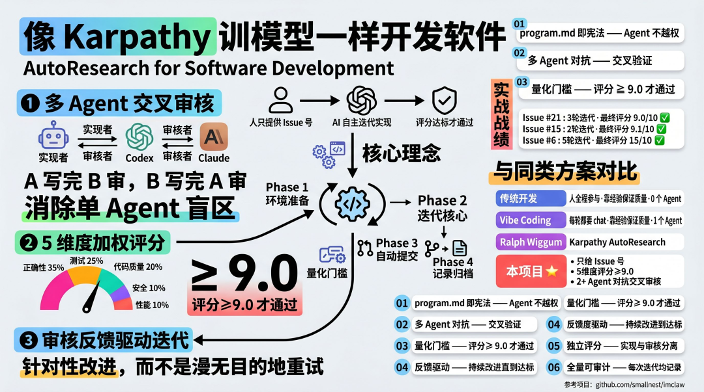
01
项目地址：
https://github.com/smallnest/autoresearch
最近做了优化：
将此工具抽取成独立的项目
代码进行了重构，增加了更多的控制
通用化, 可以应用于任意的github项目
增加了opencode,可以实现1个到3个任意组合的Coding Agent交叉审核和代码实现
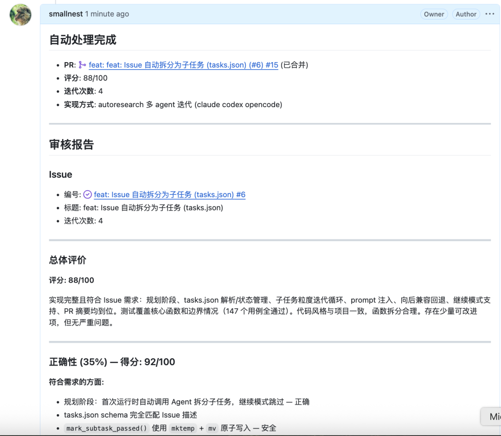
02
2026 年 3 月，AI 领域知名研究者 Andrej Karpathy 发布了 autoresearch 项目，短短几天内就在 GitHub 收获 5 万+ 星标，Karpathy 发布的介绍视频播放量达 860 万次。这是一款开源 Python 工具，代码量约 600 行。
核心思想是：把 AI 研究本身也交给 AI 来自主完成。
具体做法极简而优雅：给 AI Agent 一个真实的小型 LLM 训练环境（单 GPU，5 分钟训练预算），让它自主修改 train.py、跑实验、检查结果——只有 val loss（验证集损失）改善时才 commit，否则 git revert 回滚，然后继续下一轮。人类只需维护一份 program.md（相当于给 Agent 的「研究章程」），剩下的全部交给 Agent 晚上自己跑。
这个项目的精髓在于三点：① 量化目标（val loss 是唯一判断标准）、② 自主循环（Agent 不需要人类每轮介入）、③ 只保留改进（退化就回滚，绝不将就）。预计每小时可完成约 12 次实验，一觉醒来就能收获上百轮自动优化的结果。
Andrej Karpathy的这套思路在 ML 研究领域验证有效后，我开始思考：软件开发领域能否复刻同样的魔法？ 把"修改 train.py → 跑 5 分钟实验 → val loss 改善才保留"，替换成"实现 GitHub Issue → 跑测试 → 多维评分达标才合并"——这就是本项目的起点。实测下来，10 分钟完成一个中等复杂 Issue，全程零人工干预，最终评分 9.0/10。
Issue#21自动化实现的回放地址：
https://asciinema.org/a/896260
这个回放解决的Issue#21:
https://github.com/smallnest/imclaw/issues/21
前几天正好看到花叔的写的一个SKill:达尔文.skill, 殊途同归—— 他在
Skill开发领域同样应用AutoResearch方法实现对Skill技能的优化。后来花叔把这个经验总结到他的另外一个Skill项目上：auto-optimize-skill。
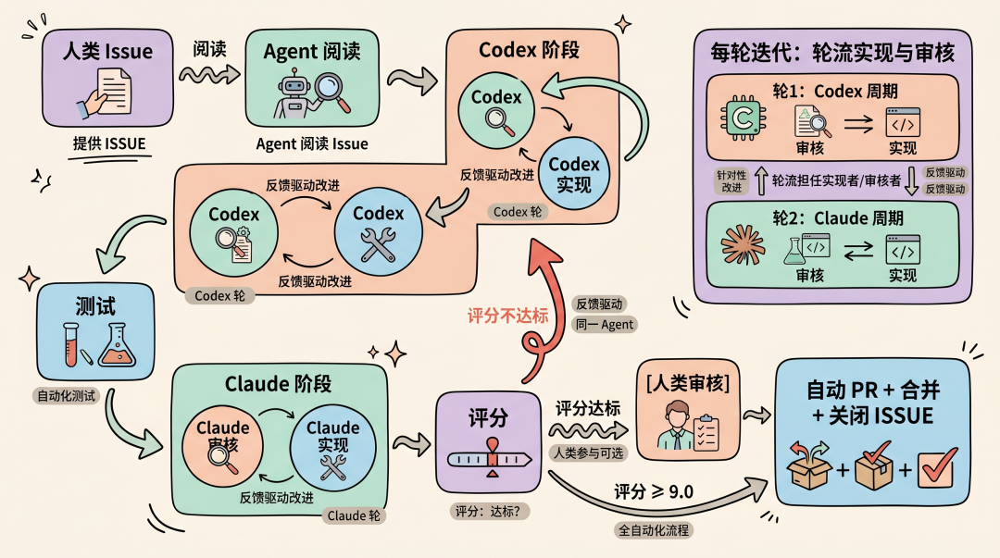
03
传统的"人类写代码 → 运行测试 → 修复问题"流程，在 GitHub Issues 有几十上百个待处理项时不再可行。
即使用 Claude Code / Codex 等 AI 编程工具（所谓的 vibe coding），你仍然需要：
一轮一轮地 chat 交互，告诉 AI 做什么
人工检查输出、发现问题、再告诉 AI 改什么
生成的代码是一堆『屎山💩』
人始终被绑在循环里，离开就不转了
2025 年底流行的 Ralph Wiggum 方法（while true; do cat PROMPT.md | claude; done）更进一步：写好 SPEC，让单 Agent 在循环里自主干活。解决了人的 chat 交互问题，但本质是单个 Agent 的自我循环——自己写、自己测、自己改，没有外部审核视角，质量全靠测试 backpressure 和 prompt 工夫。
2026 年 3 月 Karpathy 发布了 autoresearch，把同样的循环思路用到了 ML 研究领域：写一个 program.md 定义目标和约束，AI 自主修改训练代码、跑 5 分钟快速实验，只有 val loss 改善时才 commit，否则 git revert。核心创新是把"什么是改进"量化成了一个明确的 metric。
本项目的 Autoresearch 在 Karpathy 思想基础上做了三个关键改进：
1. 多 Agent 交叉审核，替代单 Agent 自审。Ralph Wiggum 和 Karpathy AutoResearch 都是单 Agent 自己改自己评，缺少外部视角。本项目让 Codex 和 Claude 轮流担任实现者和审核者：A 写完 B 审，B 写完 A 审。不同模型有不同的盲区和强项，交叉审核能发现单 Agent 发现不了的问题。实践证明，单 Agent 的效果远不如双 Agent 交叉审核。本项目创造性地使用两个 Agent 轮流审核和开发，极大地提高了代码质量。
2. 5 维度加权评分，替代单一 metric。 Karpathy 用 val loss 一个数字判断好坏，ML 场景足够用。但软件工程的质量是多维的——功能正确、测试充分、代码规范、安全无漏洞、性能没坑。本项目用 5 维度加权评分（正确性 35% + 测试 25% + 代码质量 20% + 安全 10% + 性能 10%），总分 ≥ 9.0 才算通过，把"代码好不好"从主观判断变成量化指标。
3. 审核反馈驱动下一轮实现，替代盲循环。 Ralph Wiggum 的每轮循环是独立的——新上下文重新开始，不记得上轮犯了什么错。本项目的审核反馈直接传入下一轮 Agent 的提示词，Agent 看到上一轮的具体问题后针对性改进，而不是漫无目的地重试。
最终效果：人只提供 Issue 号，剩下的全自动——自动实现、自动测试、自动审核、自动迭代、评分达标后自动 PR + 合并。
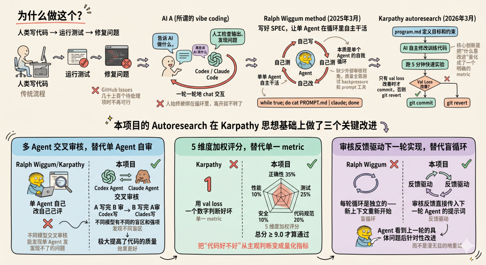
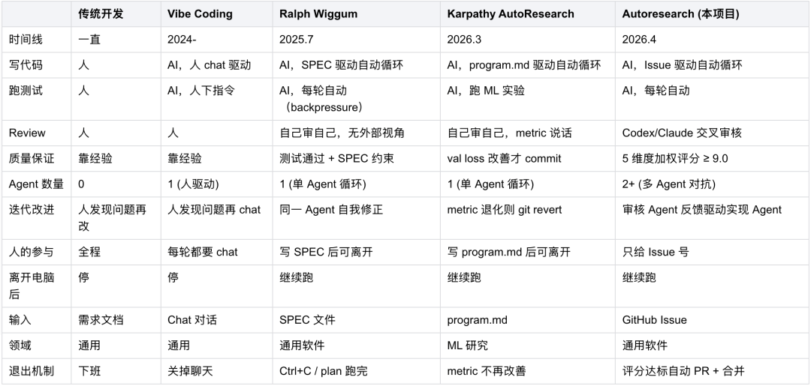
与同类项目对比
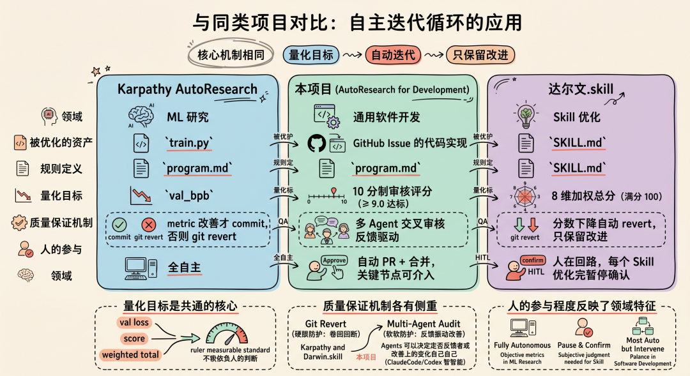
本节对比三个将"自主迭代循环"思想应用到不同领域的项目：Karpathy 的 AutoResearch 用于 ML 研究，本项目用于通用软件开发，达尔文.skill 用于 Skill 优化。三者核心机制相同——量化目标 + 自动迭代 + 只保留改进——但在被优化的资产、质量保证机制、人的参与程度等方面做出了不同选择。
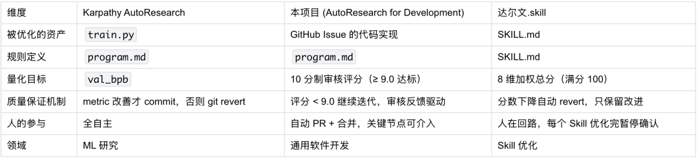
从对比可以看出：
量化目标是共通的核心。三个项目都把"什么是改进"定义成了可量化的指标——val loss、审核评分、8 维总分——而不是依赖人的主观判断。
质量保证机制各有侧重。Karpathy 和达尔文.skill 用 git revert 做硬性保护（退化就回滚），本项目用多 Agent 交叉审核做软性保护（审核反馈驱动改进，并没有做回退机制，原因在于ClaudeCode/Codex自己足够智能决定回退还是改进上一轮的变动）。
人的参与程度反映了领域特征。ML 研究的 metric 足够客观，可以全自主；Skill 的好坏需要人的判断，所以每轮暂停确认；软件开发介于两者之间，大部分自动但保留关键节点介入能力。
04
以下是这个项目的架构图：
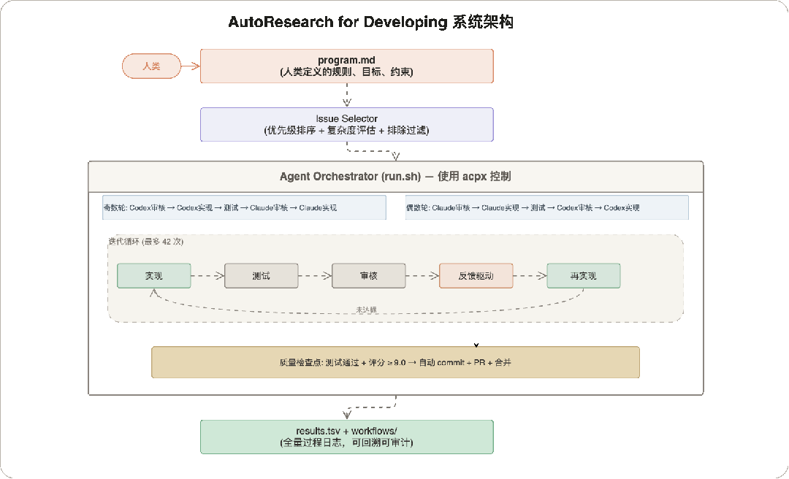
4.1 六条核心原则
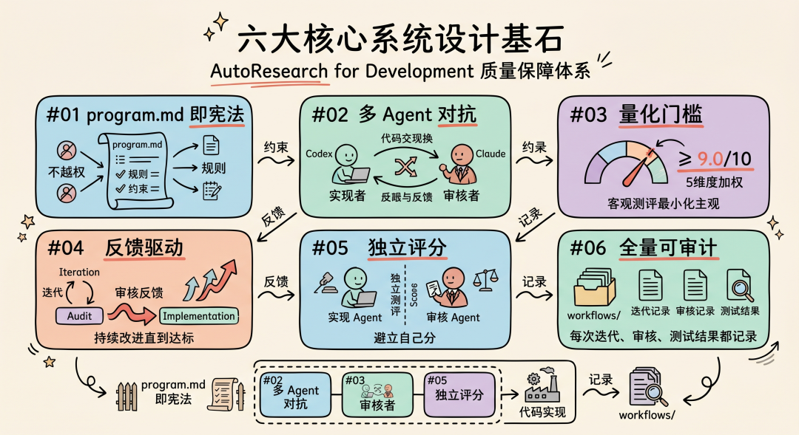
这六条原则是整个系统的设计基石。原则 01 定义了规则的来源和边界，原则 02-05 构成了多 Agent 对抗的质量保证链（谁来做、怎么评、怎么改进），原则 06 确保整个过程可追溯。它们相互配合：没有 program.md 的约束，Agent 会越权；没有多 Agent 对抗，单 Agent 自审会有盲区；没有量化门槛，质量判断就回到主观经验；没有反馈驱动，迭代就是盲循环；没有全量记录，出了问题无法回溯。
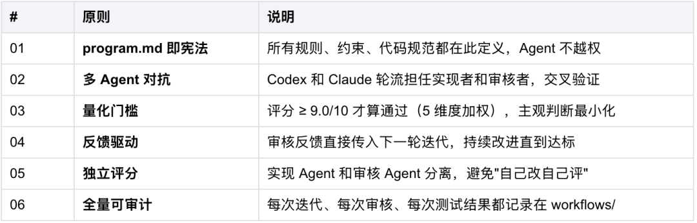
4.2 审核评分体系
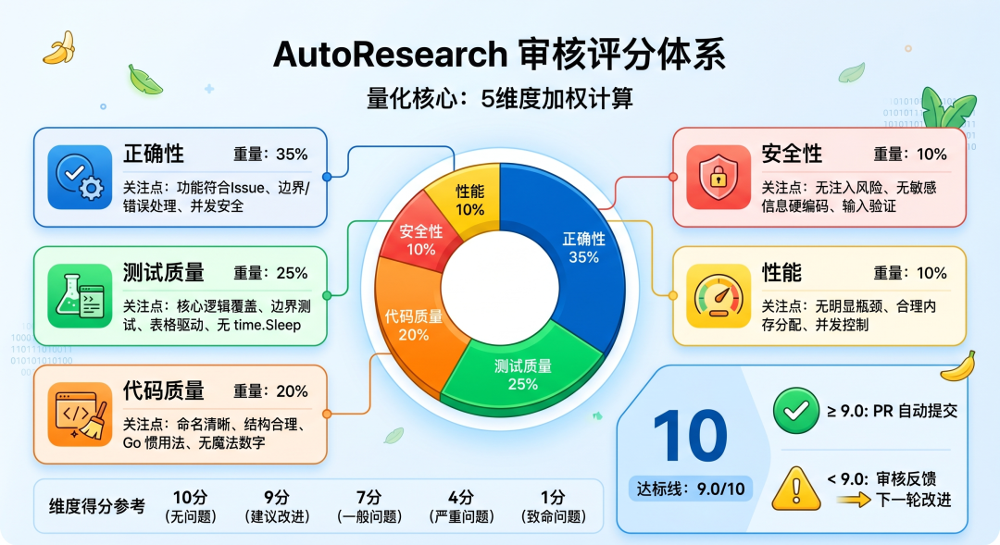
审核评分是 AutoResearch 的量化核心——它把"这段代码好不好"从一个模糊的主观判断，变成一个 5 维度加权计算出的精确分数。这个分数决定了迭代是继续还是停止：≥ 9.0 自动提交 PR，< 9.0 审核反馈驱动下一轮改进。维度和权重的分配反映了软件工程的质量优先级：功能正确最重要（35%），测试其次（25%），代码质量（20%），安全和性能各占 10%。
总分 10 分，5 维度加权：
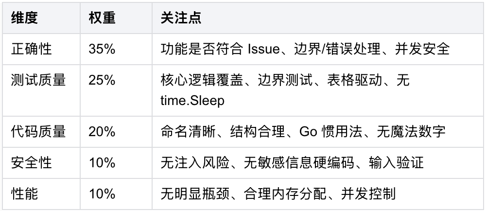
各维度得分：无问题 10 分 / 建议改进 9 分 / 一般问题 7 分 / 严重问题 4 分 / 致命问题 1 分
达标线：9.0/10
4.3 优化循环：4 个阶段
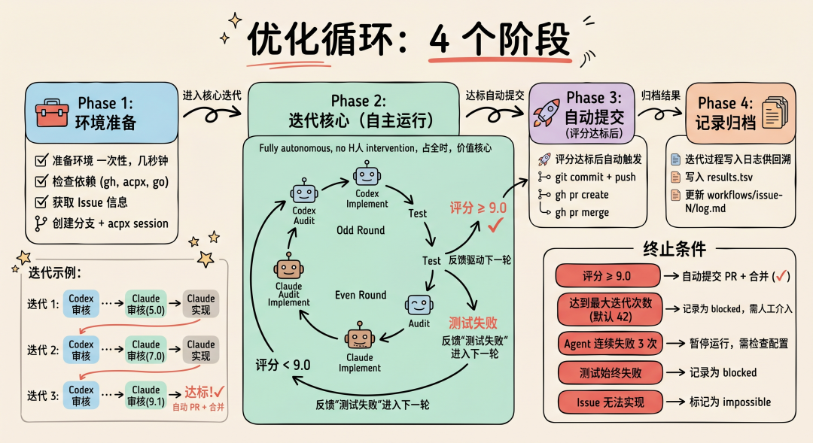
整个流程分为 4 个阶段。
Phase 1 做环境准备（一次性，几秒钟）。
Phase 2 是核心迭代循环——多 Agent 轮流审核和实现，测试验证，评分判定，这个阶段完全自主运行，不需要人介入。
Phase 3 在评分达标后自动触发，完成 commit + PR + 合并。
Phase 4 做结果归档，把迭代过程写入日志供回溯。其中 Phase 2 占了几乎全部时间，也是系统价值的核心所在。
Phase 1: 环境准备└─ 检查依赖 (gh, acpx, go)└─ 获取 Issue 信息└─ 创建分支 + acpx sessionPhase 2: 迭代核心 (自主运行)└─ 奇数轮: Codex 审核 → Codex 实现 → 测试 → Claude 审核 → Claude 实现└─ 偶数轮: Claude 审核 → Claude 实现 → 测试 → Codex 审核 → Codex 实现└─ 评分 ≥ 9.0 → Phase 3└─ 评分 < 9.0 → 反馈驱动下一轮└─ 测试失败 → 反馈"测试失败"进入下一轮Phase 3: 自动提交 (评分达标后)└─ git commit + push└─ gh pr create└─ gh pr mergePhase 4: 记录归档└─ 写入 results.tsv└─ 更新 workflows/issue-N/log.md
迭代示例：
迭代 1: Codex 审核 → Codex 实现 → 测试 → Claude 审核(5.0) → Claude 实现迭代 2: Codex 审核 → Codex 实现 → 测试 → Claude 审核(7.0) → Claude 实现迭代 3: Codex 审核 → Codex 实现 → 测试 → Claude 审核(9.1) → 达标！→ 自动 PR + 合并 ✓
终止条件：在以下情况下，任务会终止
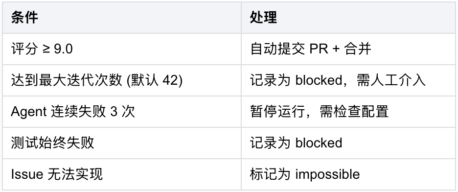
4.4 核心文件
autoresearch/├── program.md # 宪法：实现规则、权限边界、代码规范、质量标准├── issue-selector.md # Issue 选择策略：优先级、排除规则、复杂度评估├── run.sh # 编排引擎：完整自动化脚本├── agents/│ ├── codex.md # Codex 角色：实现者指令 + 代码规范 + 自检清单│ ├── claude.md # Claude 角色：审核者指令 + 评分标准 + 问题模板│ └── gemini.md # Gemini 角色：实现者指令（扩展 Agent）├── workflows/│ └── issue-{n}/│ ├── log.md # 总日志：迭代记录、评分历史│ ├── iteration-N-codex.log # 各轮 Codex 输出│ ├── iteration-N-claude.log # 各轮 Claude 输出│ └── test-N.log # 各轮测试结果└── results.tsv # 全量结果汇总
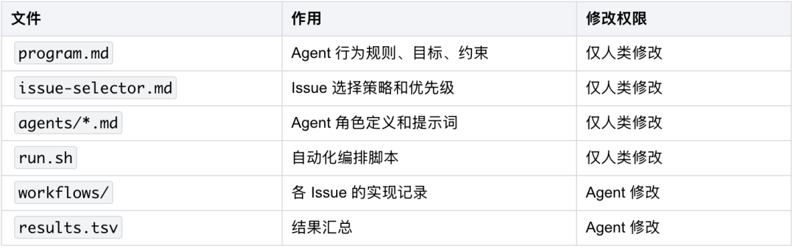
4.5 Issue 选择策略
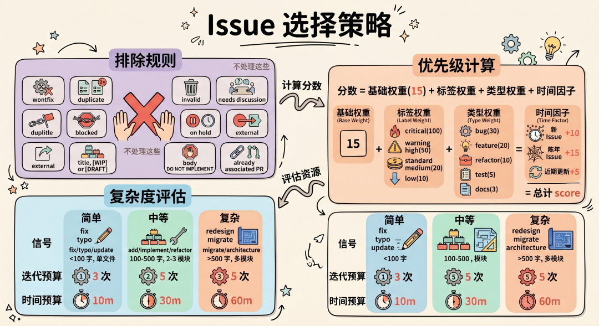
排除规则：以下 Issue 不处理：wontfix / duplicate / invalid / blocked / needs discussion / on hold / external，标题含 [WIP] [DRAFT]，正文含 DO NOT IMPLEMENT，已有 PR 关联。
优先级计算：
分数 = 基础权重(15) + 标签权重 + 类型权重 + 时间因子标签权重：critical(100) > high(50) > medium(20) > low(10)
类型权重：bug(30) > feature(20) > refactor(10) > test(5) > docs(3)
时间因子：新 Issue +10 / 陈年 Issue +15 / 近期更新 +5
复杂度评估：
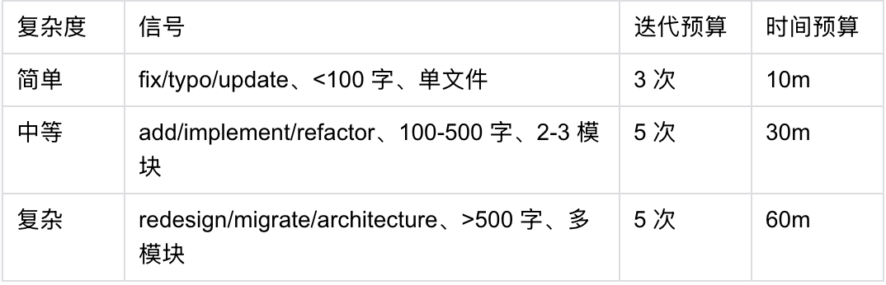
4.6 program.md 要点
权限边界：
Agent 可以:✓ 修改 internal/, cmd/✓ 创建/修改测试文件✓ 运行测试和 lint✓ 创建本地分支和 commit✓ 在 workflows/ 记录日志Agent 不可以:✗ 修改 go.mod, .github/, Makefile, CI/CD✗ 删除任何现有文件✗ 推送到远程仓库（由 run.sh 统一处理）✗ 关闭 Issue✗ 修改 autoresearch/ 规则文件
代码规范（Go）：
1. 遵循 Effective Go + Go Code Review Comments2. gofmt + goimports + golangci-lint3. 包名小写、文件名下划线、导出大写4. 接口用 er 后缀 (Reader, Handler)5. 错误用 fmt.Errorf 包装，提供上下文
测试规范：
1. 所有新功能必须有单元测试2. 覆盖率 ≥ 70%3. 表格驱动测试4. 命名 Test<Function>_<Scenario>5. 禁止 time.Sleep、外部依赖、全局状态、硬编码端口
4.7 错误处理
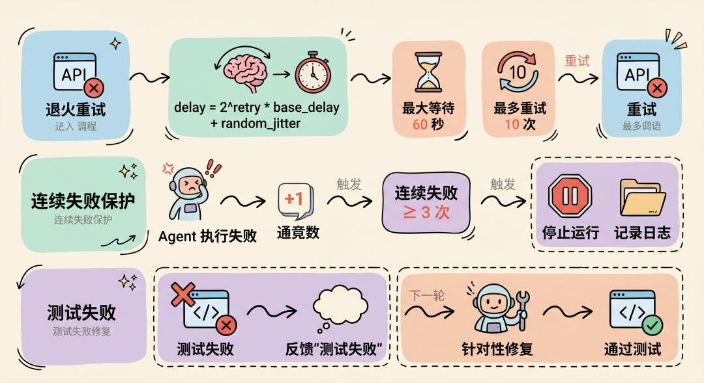
退火重试： API 调用失败时使用指数退避 + 随机抖动（delay = 2^retry * base_delay + random_jitter，最大等待 60 秒，最多重试 10 次）。
连续失败保护： Agent 执行失败 → 连续失败计数 +1，连续失败 ≥ 3 次 → 停止运行，记录日志。
测试失败： 测试失败 → 反馈"测试失败" → 下一轮 Agent 针对性修复。
4.8 运行结果
results.tsv 格式：
timestamp issue_number issue_title status iterations tests_passed score branch_name2026-04-01 15 event proto completed 2 true 9.1 feature/issue-152026-04-01 6 web UI completed 5 true 15 feature/issue-6
状态定义：
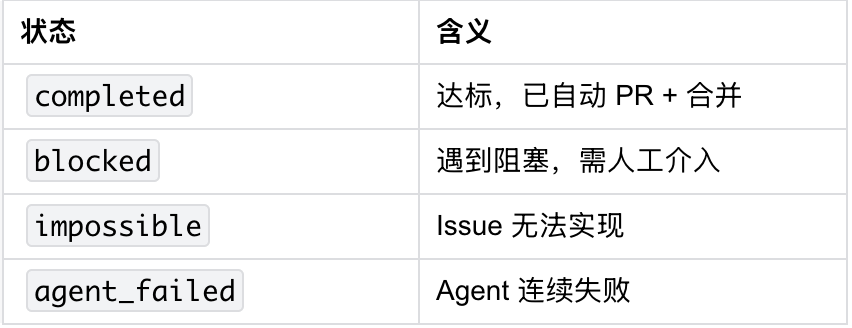
05
5.1 前置条件
因为需要自动化处理 GitHub 的 Issue，所以需要安装 GitHub CLI。
因为通过 acpx 操控 Claude Code 和 Codex，所以需要安装 acpx 工具。
因为本项目使用 Go 语言开发，所以需要安装 Go 环境。
# GitHub CLI (gh)gh auth status# Agent 控制工具 (acpx)which acpx# Go 环境go version
5.2 运行
调用run.sh脚本，直接输入issue号即可运行。
# 进入你要处理的 GitHub 项目目录cd /path/to/your/github/project# 处理单个 Issue/path/to/autoresearch/run.sh 21# 指定最大迭代次数/path/to/autoresearch/run.sh 21 10
脚本会自动：检查环境 → 获取 Issue → 创建分支 → 轮流 Codex/Claude 实现+审核 → 达标后自动 PR + 合并。
5.3 自定义配置
在项目根目录创建 .autoresearch/ 目录可覆盖默认配置：
.autoresearch/├── agents/│ ├── codex.md # 自定义 Codex 指令│ └── claude.md # 自定义 Claude 指令├── workflows/ # 自动生成└── results.tsv # 自动生成
06
以下是我实际开发真实案例，特别的是 Issue #21, 我专门使用 asciinema 工具记录了这个issue自动开发的全过程。
Issue #21: feat: enhance job execution with agent selection and timeout
我只需提供一个Issue号，剩下的就由 autoresearch 脚本自动完成。
./docs/autoresearch/run.sh 21默认设置最多执行 42 轮迭代，但通常几轮之后代码质量便能达到标准。下面是 Issue #21 的迭代过程，大约 10 分钟就完成了开发，总共迭代了 3 轮。
你可以点击这个回放链接 查看完整过程:
（回放链接：
https://asciinema.org/a/896260）
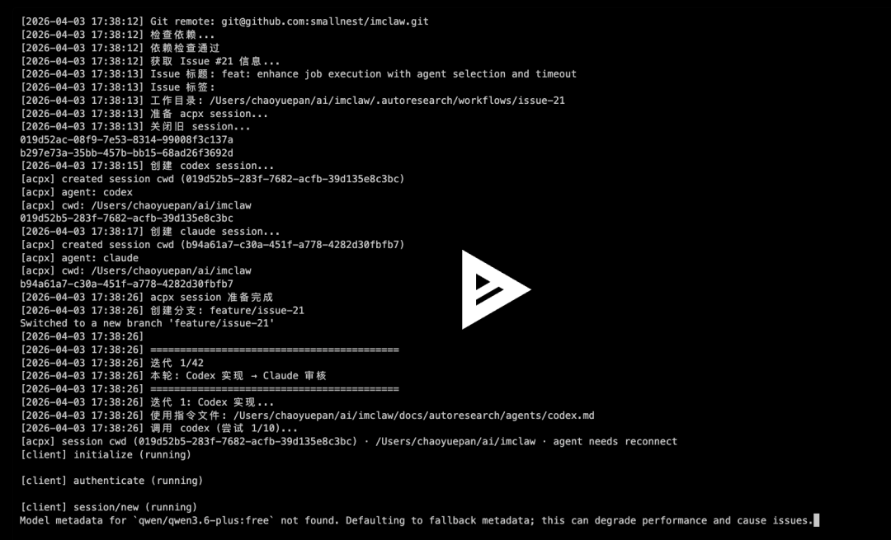
关键日志：
复杂度：中等（涉及 Job 结构体扩展、超时控制、API 增强）Issue 内容：为 Job 添加 AgentName/Timeout/MaxRetries 字段，超时自动取消，失败自动重试迭代 1 (Codex): 评分 1.0 → Codex 只读取了代码就结束，功能完全未实现迭代 2 (Claude): 评分 5.0 → Codex 实现了超时控制和 API 增强，但 Claude 审核发现不足迭代 3 (Codex): 评分 9.0 → 达标！→ 自动 commit + PR + 合并 ✓代码改动：- internal/job/job.go: 添加 Timeout 字段和 context.WithTimeout 超时控制- internal/job/job_test.go: 新增 TestExecuteJob_Timeout 等测试用例- internal/gateway/server.go: REST API 和 JSON-RPC 支持 timeout 参数总耗时：约 10 分钟（17:38 → 17:47）总迭代次数：3 轮最终评分：9.0/10回放链接：https://asciinema.org/a/896260
Issue #15: feat: define source-of-truth event protocol
实现 Issue #15 时，仅迭代两轮代码质量便达到了标准，关键日志如下：
迭代 1 (Codex): 评分 5.0 → 反馈：设计方向问题迭代 1 (Claude): 评分 7.0 → 反馈：改进实现细节迭代 2 (Codex): 评分 9.1 → 达标！→ 自动 commit + PR + 合并 ✓总迭代次数：2 轮（奇数轮 Codex 实现 + Claude 审核，Claude 补充实现 + Codex 审核）
Issue #6: feat: add web UI for sessions
实现 Issue #6 的时候关键日志，就迭代了5轮代码质量就达到了标准：
复杂度：高（涉及多个模块、需要设计决策）迭代次数：5 轮最终评分：15/10（Claude 和 Codex 均评分最高）→ 自动 PR + 合并 ✓
07
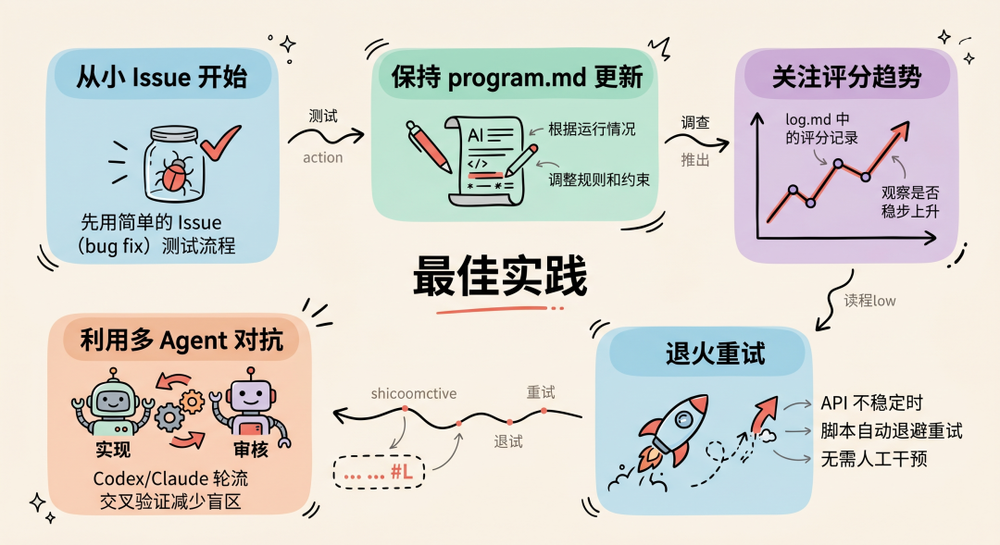
从小 Issue 开始：先用简单的 Issue (bug fix) 测试流程
保持 program.md 更新：根据运行情况调整规则和约束。一旦你在使用中觉得效果不够理想，比如评分机制不符合预期，就可以修改这个文件。
关注评分趋势：每次迭代的评分记录在 log.md 中，观察是否稳步上升
利用多 Agent 对抗：Codex/Claude 轮流实现+审核，交叉验证减少盲区
退火重试：API 不稳定时脚本自动退避重试，无需人工干预
08
karpathy/autoresearch — 核心循环：只保留可测量的改进，其余全部回滚
acpx — Agent 控制工具，让 Codex/Claude 在命令行中协作
imclaw — 本项目和autoresearch文件https://github.com/smallnest/imclaw
END
推荐阅读
读完 Claude Code 源码才发现：Skills、MCP、Rules 的区别，远没有你想的那么大
Harness Engineering: 让 Coding Agent 可靠完成长程任务
IMClaw：通过微信/飞书操控ClaudeCode/Codex/GeminiCLI/Pi Agent蜂群
我用 Go 重写了一个 OpenClaw 框架：这就是 GoClaw